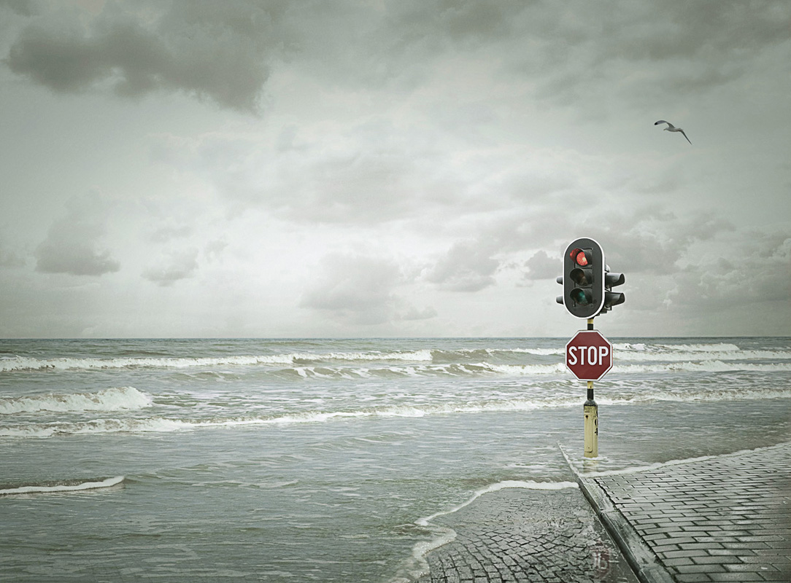

Welcome:
Zoe-Leigh Photography est. 2011, we cater to any occasion whether it be Wedding, Landscape, Children and Family photos. We do them all. With the top leading photographers employed at Zoe-Leigh Photography, we are the leaders in modern photography expanding it at every corner.
Schooling and Career Development:
Zoe-Leigh Photography offers skills and arts development, new works, presentation and promotion, and programs and initiative programs through our grants scheme as well as accreditation, recognition, dissemimates information, provides a forum for its members to discuss current issues, and represents the industry to arts and media.
Forums:
If you need any information or help on photography, our admins, also professional photographers are there too help you twenty four hours, seven days a week, with any questions you may need answering on photography.
Products:
We sell top quality photography products, memory cards (SD, SHD, USB), professional cameras from Canon, Nikon and Panasonic, stands and part replacements, most importantly, since it's christmas, everything is selling for 25% off. Happy shopping!
